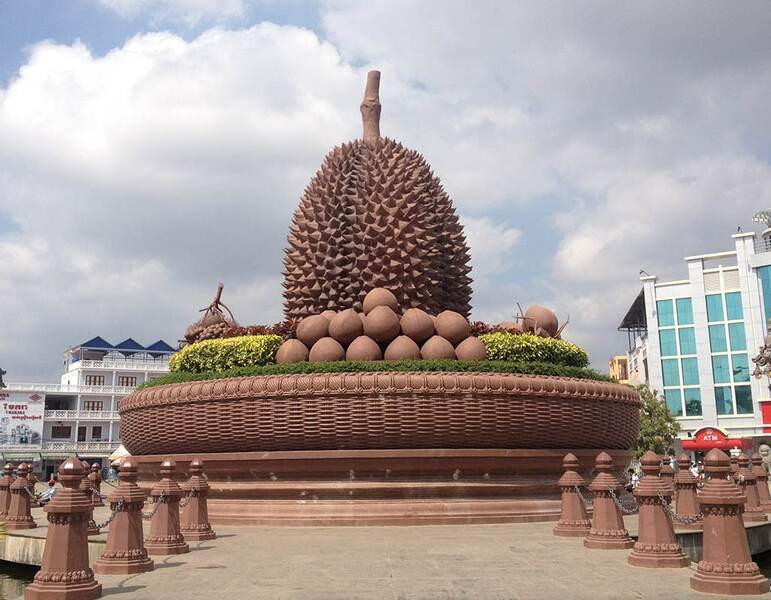

 ខេត្តកំពត គឺជាខេត្តមួយស្ថិតនៅប៉ែកខាងត្បូងនៃប្រទេសកម្ពុជា ដែលមានចម្ងាយ ១៤៨ គ.ម. ពីទីក្រុងភ្នំពេញ មានព្រំប្រទល់ខាងជើងទល់នឹងស្រុកបរសេដ្ឋ ខេត្តកំពង់ស្ពឺ ខាងកើតជាប់នឹងស្រុកត្រាំកក់ និង ស្រុកគីរីវង់ ខេត្តតាកែវ ខាងត្បូងជាប់នឹងឈូងសមុទ្រ ខាងលិចជាប់នឹងស្រុកកំពង់សិលា និងស្រុកព្រៃនប់ ខេត្តព្រះសីហនុ ដូចគ្នាដែរ ខ្សែឆ្នេរដ៏វែងស្ថិតនៅលើឈូងសមុទ្រថៃទៅខាងត្បូង ខេត្តកំពតមានទីក្រុងឈ្មោះក្រុងកំពត។ កំពតមានប្រជាជន ៦២៧ ៨៨៤ នាក់[២] និងប្រកបដោយស្រុកនិងក្រុងចំនួនប្រាំបីដែលបានចែកទៅជាឃុំ-សង្កាត់ ៩២ ជាមួយនិងភូមិសរុប ៤៧៧ ភូមិ។[៣] ខេត្តកំពតមានសំណង់ប្រវត្តិសាស្រ្តជាច្រើនដូចជា ផ្ទះ ផ្សារលក់ទំនិញ រោងភាពយន្ត សាលារៀន ផ្លូវគមនាគមន៏ មន្ទីរពេទ្យជាដើម សុទ្ធសឹងជាភស្ដុតាង]បង្ហាញឱ្យឃើញពីការចាប់អារម្មណ៍របស់ពួកបារាំងទៅលើទឹកដីខ្មែរខេត្តកំពតមួយនេះ។ហើយក៏មានភ្នំបូកគោដែលជាទីចាប់អារម្មណ៍របស់ភ្ញៀវទេសចរណ៍ជាតិ និងអន្តរជាតិគ្រប់ៗរូបផងដែរ។ នៅលើនោះក៏មានកាស៊ីណូ និង មាន កន្លែងកម្សាន្តជាច្រើនដូចជា៖ វាលស្រែមួយរយ ទឹកធ្លាក់អាចមើលទេសភាព មកខាងក្រោមយ៉ាងស្រស់ស្អាត អាចចាប់ពពកបាន។-ល-។ ស្រុកទូកមាសបានតាំងទីនៅខេត្តកំពត។ទេសភាពនៃព្រែកកំពត មើលពីក្រុងកំពត ក្បែរសាលាខេត្ត ចំពីមុខភ្នំបូកគោ។ ខេត្ដតាកែវ បានចូលដែនរដ្ឋបាលខេត្ដកំពត នៅត្រង់ស្រុកជុំគី ត្រង់ចំនុចវត្ដពុទ្ធគីរី រហូតដល់ រមណីយដ្ឋានកំពូលពេជ្រ។ប្រភពបានឲ្យដឹងថា ខ្មែរយើងបានសរសេរនិងអានពាក្យប្រជុំជន កំពត ថា គុម្ពត ឬ កំពោត ដែលពាក្យនេះ បានក្លាយទៅជាឈ្មោះខេត្ត ហើយឈ្មោះនេះត្រូវបានគេហៅដោយសំដៅទៅលើភូមិមួយ ដែលអ្នកស្រុកស្គាល់ពីយូរលង់ណាស់មកហើយ ស្ថិតនៅព្រែកកំពត ដែលមានប្រភពមកពីភ្នំដំរី។ ហើយនៅខាងលើដៃព្រែកកំពតបន្តិច ដែលជាទីប្រជុំជនចិនរស់នៅ ហៅភូមិព្រៃស្តុក(ម្តុំអណ្ដូងខ្មែរ) យ៉ាងក៏ដោយ ពាក្យថា គុម្ពត និងកំពោត គេពុំដែលយល់ស្របទៅលើដើមកំណើត និង ឫសគល់នៃពាក្យនេះឡើយ។ ក្នុងនោះ តាមសម្ដីអ្នកខ្លះតំណាលថា មានស្ត្រីអ្នកមានធនធានចតុស្តម្ភម្នាក់ឈ្មោះ នាង ពត ដែលបានរស់នៅទីនោះជាអ្នកមានឥទ្ធិពល និងទទួលការលើកតម្កើងយ៉ាងខ្លាំងពីអ្នកស្រុកភូមិផងរបងជាមួយ ដោយសារភោគទ្រព្យមហាសាលរបស់នាង ហើយអ្នកស្រុកបានប្រមូលផ្តុំគ្នាមករស់នៅជុំវិញស្ត្រីនោះ តាមបែបសាជីវកម្ម គឺរបៀបជាក្រុមមួយ។ តំណក្រោយមក ពាក្យថា "ក្រុម" នេះក្លាយមកជាពាក្យ "កុម" ដូចនេះនៅជាប់ភូមិឋាននៃក្រុមរបស់នាង ពត មានឈ្មោះជាបន្តបន្ទាប់ថា ក្រុមនាងពត រួចក្រុមពត។ ងាកមក រឿងនិទានមួយប្រហាក់ប្រហែលគ្នានេះដែរ បានតំណាលពីស្ដេចព្រះរាម នាសម័យបែកបាក់លង្វែក ដែលបានរត់គេចចេញពីការបះបោរក្នុងរាជវាំង ហើយភៀសព្រះកាយមកគង់នៅជាមួយមហេសីម្នាក់ រួមទាំងពួកអាមាត្យស្មោះត្រង់មួយចំនួន។ បន្ទាប់មកទៀត មហេសីដែលមាននាមថា អ្នកម្នាង ពត មានជំងឺរួចក៏ស្លាប់នៅទីនោះ ក្រោយមក ដើម្បីជាអនុស្សាវរីយ៍យូរលង់តទៅ ចំពោះស្ត្រីដែលព្រះអង្គសព្វព្រះទ័យជាងគេ ជាពិសេសព្រះអង្គក៏ប្រទានឈ្មោះកន្លែងនោះថា កំពត។ លើសពីនេះ ពាក្យ កំពត ក៏នៅមានការពន្យល់ពីរបៀបផ្សេងគ្នាទៀតផងដែរ ៖ ទី១ តាមសម្ដីអ្នកចេះដឹងមួយចំនួនបានអះអាងថា ឈ្មោះ កំពត បានមកពីផែនសិលាចារឹកមួយផ្ទាំងដែលគេប្រទះឃើញក្នុងខ្ទមស្លឹកមួយ ដែលគេបោះបង់ចោលស្ថិតនៅក្រោយភូមិកំពត ហើយផែនថ្មនោះ មានកម្ពស់៣០សង់ទីម៉ែត្រ ដោយមានអមពីចំហៀងនូវផ្ទាំងសិលា តូចៗ២ទៀត។ អ្នកស្រុកឲ្យឈ្មោះផ្ទាំងសិលាចារឹកនោះថា កំពត ហើយក្លាយជាវត្ថុសក្ការបូជា។ ទី២ នៅខាងត្បូងបឹងកំពត គេបានប្រទះឃើញសិលាចារឹកមួយផ្ទាំងទៀត ដែលមានទំហំធំ ហើយមានសណ្ឋានរូបរាងដូចត្រីក្រពត ស្ថិតក្នុងព្រៃគុម្ពោតមួយ។ ប៉ុន្តែទីកន្លែងនោះ នៅជ្រៅពោរពេញទៅដោយវាលភក់ ព្រមទាំងទឹកជំនន់លិចពិបាកចូលទៅដល់ ។ ដូចនេះតំណតក្រោយមកពាក្យក្រពត ក៏ក្លាយទៅជាកំពត។ ដោយយើងមានទំនោរទៅលើមតិមួយ នៃការបកស្រាយទាំងពីរចុងក្រោយ ដែលសមស្របអាចទទួលយកពីបណ្ដាជនអ្នកចេះដឹង ដែលរស់នៅលើទឹកដីនោះពីយូរលង់ណាស់មកហើយ។ ជាចុងក្រោយគេបានពន្យល់មួយបែបផ្សេងទៀត តែមិនសូវជាពិតប្រាកដប៉ុន្មានទេ គឺពាក្យកំពត បានចេញពីពាក្យថា កម្ពុជា ដែលមានសំឡេង "កំៗ" ដូចគ្នា ដែលជាឈ្មោះពីដើមមកនៃប្រទេសកម្ពុជា។ ការបង្ហាញពន្យល់បែបសាមញ្ញនូវពាក្យ "កំៗ" ខាងលើនេះ ក៏គេមិនអាចទទួលយកបានដែរដោយហេតុផលថា៖ ទី១ តាមឯកសាររបស់លោក ឌឿ វ៉ាន់ បានសរសេរជូនមកក្រុមទំនៀមទម្លាប់ខ្មែរនៅថ្ងៃទី២២ ខែសីហា ឆ្នាំ១៩៥៣ថា ក្រុងកំពត ពីដើមដុះសុទ្ធតែកូនស្មាច់ កូនផ្អាវនៅតាមមាត់សមុទ្រ ដែលសម្រាប់ឲ្យអ្នកជំនួញចតទូក និងសំពៅ ។ តក្រោយមកទៀត មានចិន យួន ចាម ខ្មែរទៅសង់ខ្ទមនៅជា កំប៉ូតៗទទឹងថ្ងៃនៅតាមបណ្ដោយមាត់ព្រែកកំពង់បាយ ភ្ជាប់ទៅកោះធំ ដើម្បីរកស៊ីលក់ដូរ។ កន្លែងដែលចាម ចិន ខ្មែរ យួន សង់ខ្ទមរស់នៅ គេសង្កេតឃើញមានផ្ទះជាកំប៉េតកំប៉ូត ទើបគេសន្មតហៅថា "ភូមិកំប៉ូត"។ លុះក្រោយមកទៀត ពេលមានផ្ទះទៅហើយ អ្នកលក់ដូរធ្វើតៀមលក់បាយសម្រាប់ឈ្មួញអម្រែក ចិន យួន ចាម ជ្វា និងពួកឈ្មួញដែលចតទូក ឬអ្នកធ្វើដំណើរឈប់ ដើម្បីបរិភោគបាយនៅកន្លែងនោះ។ ក្រោយមក អ្នកដំណើរឲ្យឈ្មោះទីនោះថា "ផ្សារកំប៉ូត" ឬភូមិកំប៉ូត ថា "ផ្សារកំពង់បាយ" ។ នាមបញ្ញត្តិទាំងពីរនោះប្រើច្របូកច្របល់គ្នា ខ្លះហៅថា ផ្សារកំប៉ូត ខ្លះទៀតហៅថា ផ្សារកំពង់បាយ តែសព្វថ្ងៃគេហៅថា ខេត្តកំពត។ រីឯចំណុចទី២ តាមលោកម៉ាដ្រូល (Madrolle) បាននិយាយថា ទីប្រជុំជននៅតាមឆ្នេរសមុទ្រ មានដុះសុទ្ធតែដើមផ្អាវ តែកន្លែងដែលឈ្មោះថា កំពត សព្វថ្ងៃហៅថាកំពង់បាយ។ លោកទាំងពីរថា កំពង់បាយដូចគ្នា ខុសត្រង់លោក ឌឿ វ៉ាន់ ថាផ្សារកំប៉ូត រីឯលោក ម៉ាដ្រូល បានអះអាងថា កំពត ប្រហែលមកពីពាក្យកម្ពុជា គេអាចសរសេរទៅជាកម្ពុជារដ្ឋ ដល់គេកាត់រដ្ឋចេញទៅនៅសល់តែកម្ពុជា។ នៅពេលដែលក្រុងកំពត កំពុងកកើតមានឈ្មួញជនជាតិសៀមធ្វើដំណើរតាមសមុទ្រ មកឈប់អាស្រ័យបាយនៅត្រង់កន្លែងនោះ ហើយដោយភាសាសៀម ពាក្យថា កម្ពុជា អានថា "កម្ពុត" ដល់ យូរៗទៅដោយធ្វេសប្រហែសបាត់ស្រៈអ៊ុ ( ុ) នៅសល់តែ "កំពត"។[៤]